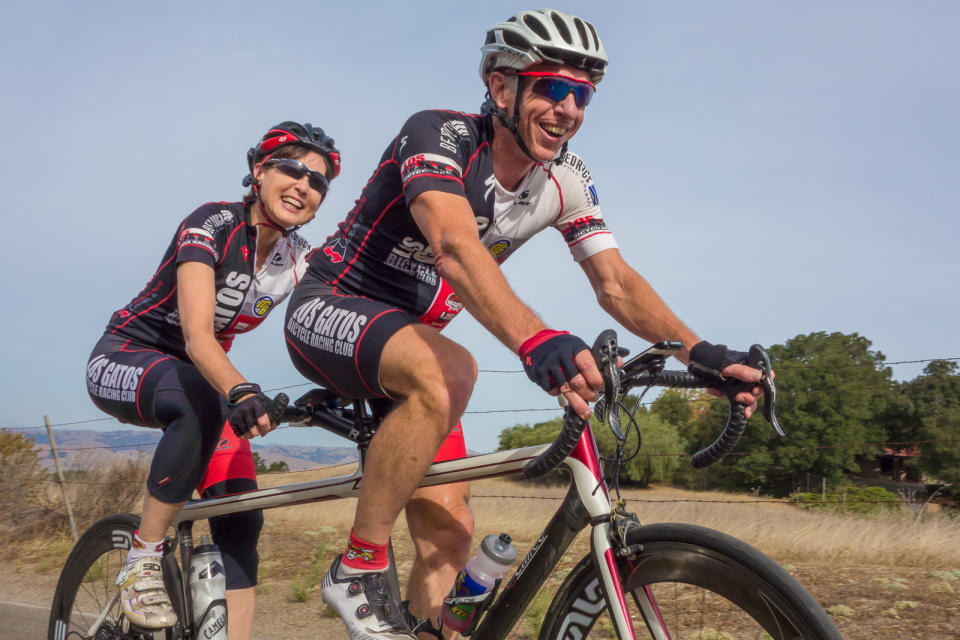

Low-Key Hillclimbs Aggregate Results:
Mill Creek
generated Fri Nov 4 10:34:14 PDT 2016
|
|  |
| 2015 week 4: Will and Lynn grimace in pain as they ride the upper slopes of Mill Creek Road (Bill Bushnell) |
Results are listed here from the Low-Key archives, sorted by time for each climb. Some years start and/or finish time differ slightly, such as
with Kings Mt Road where after 1995 the start moved from Entrance Way to Greer.
Results are ranked by time first, score second.
Score is calculated using a simple percent-of-median-speed
formula, with time adjustments for division. These scores will generally differ from those calculated in the results for that particular year, since
the scoring scheme has evolved. Tandems are split between 1998, when they were counted as single participants, and other years, when the individual
riders have been counted separately
Results for Men
| rank | time | score | rider | cat | team | year | week | code |
|---|
| 1 | 19:09 | 125.991 | Kevin Metcalfe | 1 | KKMetcalfe | 2015 | 4 | |
| 2 | 19:29 | 123.835 | Carl Nielson | 55+ | Sr's & Mr's of No Mercy | 2015 | 4 | |
| 3 | 19:33 | 123.413 | Stefano Profumo | 35+ | Squadra SF | 2015 | 4 | |
| 4 | 19:35 | 123.203 | Zachary Ulissi | 2 | Stanford & Sons | 2015 | 4 | |
| 5 | 19:37 | 122.993 | Bill Laddish | 45's | Team CVC | 2015 | 4 | |
| 6 | 19:38 | 122.889 | Nick Bax | 1 | Stanford & Sons | 2015 | 4 | |
| 7 | 19:39 | 122.785 | Chris Evans | 35+ | Stanford & Sons | 2015 | 4 | |
| 8 | 20:00 | 120.636 | Jacob Berkman | 35+ | ThirstyBear p/b Akamai | 2015 | 4 | |
| 9 | 20:02 | 120.435 | Joseph Sullivan | 35+ | San Jose Bike Club | 2015 | 4 | |
| 10 | 20:06 | 120.036 | Kirk Scheibelhut | Runner With A Bike | Sparklemotion | 2015 | 4 | |
| 11 | 20:07 | 119.936 | Travis Retzer | 3 | Jim Retzer Memorial | 2015 | 4 | |
| 12 | 20:37 | 117.028 | Chris Furgiuele | 35+ | Studio Velo | 2015 | 4 | |
| 13 | 20:52 | 115.626 | Shahram Moatazedi | 40+ | LGBRC | 2015 | 4 | |
| 14 | 20:55 | 115.349 | Daniel Connelly | 3 | Low-Key | 2015 | 4 | |
| 15 | 21:04 | 114.528 | Rob Nast | 50+ | Plus 3 | 2015 | 4 | |
| 16 | 21:20 | 113.096 | Scott Gammon | 6 | Legendary | 2015 | 4 | |
| 17 | 21:32 | 112.046 | Paul Castonguay | 45+ | Low-Key | 2015 | 4 | |
| 18 | 21:38 | 111.528 | Andy Crews | 45+ | Diablo | 2015 | 4 | |
| 19 | 21:40 | 111.356 | Joe Karbowski | 35+ | Team Joe Karbowski | 2015 | 4 | |
| 20 | 21:42 | 111.185 | Alex Poloziouk | 40+ | Kovarus | 2015 | 4 | |
| 21 | 21:45 | 110.930 | Brian Schuster | 2 | Squadra SF | 2015 | 4 | |
| 22 | 21:47 | 110.760 | Stephen Lamm | 40+ | Google | 2015 | 4 | |
| 23 | 21:50 | 110.506 | Martin Schubert | 30+ | Google | 2015 | 4 | |
| 24 | 21:52 | 110.338 | Jeff Baxter | 45+ | LGBRC | 2015 | 4 | |
| 24 | 21:52 | 110.338 | Rich Hill | 50+ | LGBRC | 2015 | 4 | |
| 26 | 22:12 | 108.681 | Jim Torrence | 55+ | Eden Bicycles | 2015 | 4 | |
| 27 | 22:13 | 108.600 | John L | 45+ | For Mark | 2015 | 4 | |
| 28 | 22:14 | 108.518 | Daryl Spano | 45+ | San Jose Bike Club | 2015 | 4 | |
| 29 | 22:18 | 108.194 | Kevin Vanderende | 35+ | Oaktown Wheelmen | 2015 | 4 | |
| 30 | 22:21 | 107.952 | JD Daniels | 40+ | Jim Retzer Memorial | 2015 | 4 | |
| 31 | 22:27 | 107.471 | Matt Redmond | ;DROP TABLE 'scores' -- | MIT-West | 2015 | 4 | |
| 32 | 22:37 | 106.679 | Stuart Taylor | 40+ | Tandem Team Taylor | 2015 | 4 | |
| 33 | 22:41 | 106.365 | Christian Paquet | 55+ | Grumpy Old Men (GOM) | 2015 | 4 | |
| 33 | 22:41 | 106.365 | Justin Kennedy | 30+ | Cordelia Climb Team | 2015 | 4 | |
| 35 | 22:59 | 104.977 | Todd Studenicka | 45+ | San Jose Bike Club | 2015 | 4 | |
| 36 | 23:01 | 104.825 | Joseph Junio | Havefun | SOLO | 2015 | 4 | |
| 37 | 23:03 | 104.673 | Jim Perreira | 45+ | San Jose Bike Club | 2015 | 4 | |
| 38 | 23:33 | 102.451 | Phil Lovaglio | 55+ | San Jose Bike Club | 2015 | 4 | |
| 39 | 23:36 | 102.234 | Giles Douglas | 3 | Google | 2015 | 4 | |
| 40 | 23:48 | 101.375 | Robert Lojek | 5-Ish | Google | 2015 | 4 | |
| 40 | 23:48 | 101.375 | Jeremy Scott | 45+ | LGBRC | 2015 | 4 | |
| 42 | 23:49 | 101.304 | Scott Krahn | 30+ | LGBRC | 2015 | 4 | |
| 43 | 23:55 | 100.880 | Paul McKenzie | 60+ | Sr's & Mr's of No Mercy | 2015 | 4 | |
| 44 | 24:05 | 100.182 | Benoit Pelczar | Beat Nic > 40 | Santa Cruz Endurance | 2015 | 4 | |
| 45 | 24:07 | 100.044 | Ryan Powell | 35+ | Team Joe Karbowski | 2015 | 4 | |
| 46 | 24:10 | 99.837 | Caleb Richardson | 30+ | Team CVC | 2015 | 4 | |
| 47 | 24:20 | 99.153 | Frank Paysen | 55+ | Chain Reaction | 2015 | 4 | |
| 48 | 24:32 | 98.345 | Steve Johnson | 50+ | LGBRC | 2015 | 4 | |
| 49 | 24:43 | 97.615 | Martin Wegenstein | 65+ | LGBRC | 2015 | 4 | |
| 50 | 24:44 | 97.549 | Dan Brehmer | 50+ | LGBRC | 2015 | 4 | |
| 51 | 24:51 | 97.091 | Ramon Periquet | 50+ | Team CVC | 2015 | 4 | |
| 52 | 24:54 | 96.896 | Robert Doudell | 45+ | LGBRC | 2015 | 4 | |
| 53 | 25:11 | 95.806 | Vasileios Raptakis | Just Make It To The Top | Team Slow | 2015 | 4 | |
| 54 | 25:27 | 94.802 | Tim Irvine | 40+ | LGBRC | 2015 | 4 | |
| 55 | 25:40 | 94.002 | Michael Jones | 35+ | Team Slow | 2015 | 4 | |
| 55 | 25:40 | 94.002 | Brian Fitzgerald | 50+ | LGBRC | 2015 | 4 | |
| 57 | 26:03 | 92.619 | Jim Williams | 65+ | San Jose Bike Club | 2015 | 4 | |
| 58 | 26:13 | 92.030 | Christoph Erben | 45+ | LGBRC | 2015 | 4 | |
| 59 | 26:40 | 90.477 | Ye Zhang | Just Make It To The Top | Team Cycling Panda | 2015 | 4 | |
| 60 | 26:45 | 90.195 | Carl Werner | 50+ | LGBRC | 2015 | 4 | |
| 61 | 26:46 | 90.139 | Cory Roay | 55+ | Pen Velo/Pomodoro | 2015 | 4 | |
| 62 | 26:49 | 89.971 | Thomas Preisler | 60+ | LGBRC | 2015 | 4 | |
| 63 | 26:58 | 89.470 | Dan Pankratz | 40+ | LGBRC | 2015 | 4 | |
| 64 | 27:02 | 89.250 | Nigel Allen | 40+ | Oso | 2015 | 4 | |
| 65 | 27:05 | 89.085 | John Burton | 40+ | ? | 2015 | 4 | |
| 65 | 27:05 | 89.085 | Scott Byer | 45+ | Google | 2015 | 4 | |
| 67 | 27:13 | 88.649 | Nicholas Brummell | 50+ And Broken | Atlas | 2015 | 4 | |
| 68 | 27:20 | 88.270 | Larry Klein | 55+ | Grumpy Old Men (GOM) | 2015 | 4 | |
| 69 | 27:23 | 88.109 | Rupesh Kapoor | Slightly Old | Google | 2015 | 4 | |
| 70 | 27:34 | 87.523 | Martin Hyland | 55+ | Diablo | 2015 | 4 | |
| 71 | 27:37 | 87.365 | Shane Ruggieri | 45+ | LGBRC | 2015 | 4 | |
| 72 | 28:02 | 86.066 | Brian Ward | 40+ | Low-Key | 2015 | 4 | |
| 73 | 28:31 | 84.607 | Frank Drobot | 65+ | Team Djament | 2015 | 4 | |
| 74 | 29:25 | 82.019 | Taylor Jang | Just Make It To The Top | Diablo | 2015 | 4 | |
| 74 | 29:25 | 82.019 | Kevin Smith | 55+ | LGBRC | 2015 | 4 | |
| 76 | 29:46 | 81.054 | John Bleau | 45+ | LGBRC | 2015 | 4 | |
| 77 | 29:55 | 80.648 | Michael Riepe | 45+ | MountainFlyer Magazine | 2015 | 4 | |
| 78 | 30:15 | 79.759 | Klaus Fleischmann | 45+ | Pen Velo/Pomodoro | 2015 | 4 | |
| 79 | 30:21 | 79.497 | Garrett Lau | 50+ | LGBRC | 2015 | 4 | |
| 80 | 30:33 | 78.976 | Stephen Fong | 0 | Team 0 | 2015 | 4 | |
| 81 | 30:43 | 78.548 | Kevin Colagiovanni | 30+ | Team Dud | 2015 | 4 | |
| 82 | 31:13 | 77.289 | David Salazar | 25+ | Stanford cycling | 2015 | 4 | |
| 83 | 31:47 | 75.911 | Ed Miller | 75+ | SLACer | 2015 | 4 | |
| 84 | 32:17 | 74.736 | Richard Allen | 55+ | Sr's & Mr's of No Mercy | 2015 | 4 | |
| 85 | 33:20 | 72.382 | Gabriel Beddingfield | 40+ | Nest | 2015 | 4 | |
| 86 | 33:54 | 71.172 | Gregory P. Smith | Finisher | Low-Key | 2015 | 4 | |
Results for Female Runner
| rank | time | score | rider | cat | team | year | week | code |
|---|
| 1 | 53:47 | 54.113 | Angela Wilson | 45+ | For Mark | 2015 | 4 | |
Results for Hybrid Electric
| rank | time | score | rider | cat | team | year | week | code |
|---|
| 1 | 16:19 | 85.920 | Carol Ordemann | Hybrid-Electric | Stanford & Sons | 2015 | 4 | |
Results for Women
| rank | time | score | rider | cat | team | year | week | code |
|---|
| 1 | 22:12 | 131.099 | Amy Cameron | 35+ | Sr's & Mr's of No Mercy | 2015 | 4 | |
| 2 | 24:00 | 121.267 | Lisa Penzel | 50+ | Low-Key | 2015 | 4 | |
| 3 | 24:26 | 119.116 | Shaena Berlin | 2 | MIT-West | 2015 | 4 | |
| 4 | 26:07 | 111.438 | Jill Stone | 4 | LGBRC | 2015 | 4 | |
| 5 | 26:16 | 110.802 | Bonnie Denoyer | 45+ | LGBRC | 2015 | 4 | |
| 6 | 26:44 | 108.868 | Eleanor Wiseman | 25+ | MIT-West | 2015 | 4 | |
| 7 | 27:58 | 104.067 | Mary Ellen Allen | 50+++ | Sr's & Mr's of No Mercy | 2015 | 4 | |
| 8 | 28:32 | 102.000 | Susan Breslin | Whatever Sandra King Said | For Mark | 2015 | 4 | |
| 9 | 28:52 | 100.822 | Kitty Metcalfe | 55+ | KKMetcalfe | 2015 | 4 | |
| 10 | 29:07 | 99.956 | Milinda Lakkam | Just Make It To The Top | Saturdaze | 2015 | 4 | |
| 11 | 29:15 | 99.501 | Christina King | 45+ | Team CVC | 2015 | 4 | |
| 12 | 31:40 | 91.907 | Sandra King | 45+ | For Mark | 2015 | 4 | |
| 13 | 33:31 | 86.834 | Dan Zhang | 35+ | Team Cycling Panda | 2015 | 4 | |
| 14 | 38:06 | 76.388 | Christine Holmes | 50+ | Low-Key | 2015 | 4 | |
| 15 | 38:55 | 74.785 | Mary Wholey | Just Make It To The Top | | 2015 | 4 | |
| 16 | 41:30 | 70.130 | Andrea Ivan | 60+ | Silicon Valley Triathlon | 2015 | 4 | |
| 17 | 45:07 | 64.508 | Christina Janowski | 40+ | Wunderfoo | 2015 | 4 | |
Results for Tandem
| rank | time | score | rider | cat | team | year | week | code |
|---|
| 1 | 31:12 | 77.331 | Will Von Kaenel | 55+ | LGBRC | 2015 | 4 | |
| 1 | 31:12 | 77.331 | Lynn Von Kaenel | Stoker | LGBRC | 2015 | 4 | |